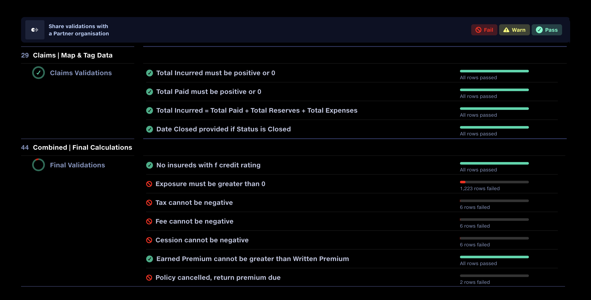
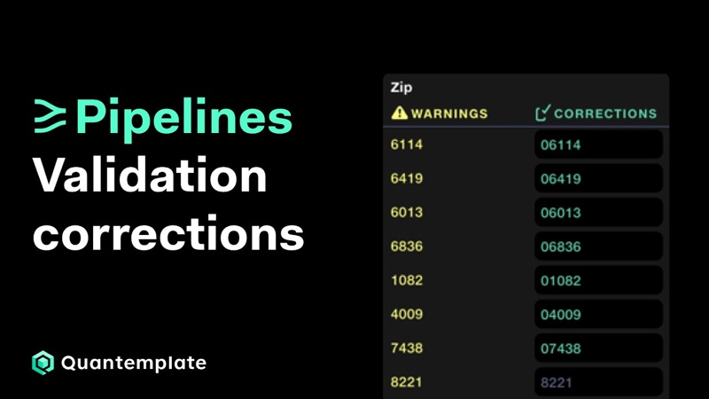
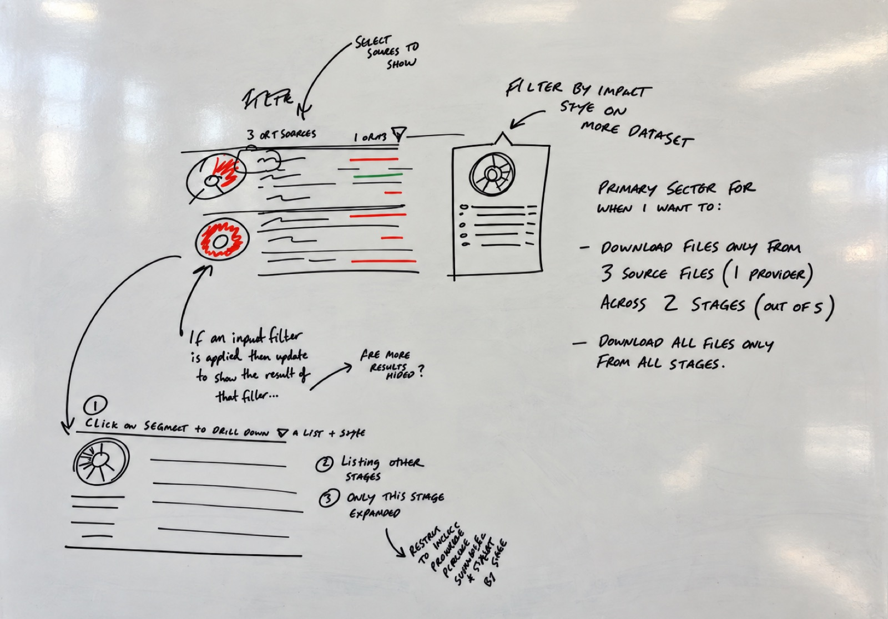
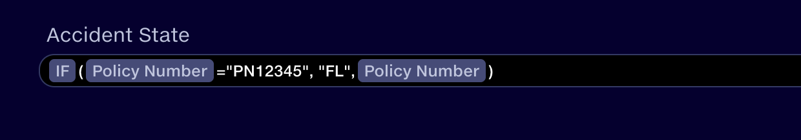
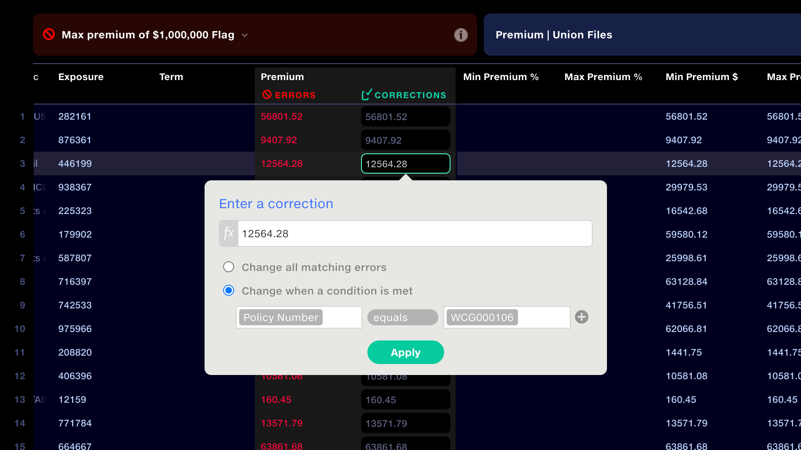
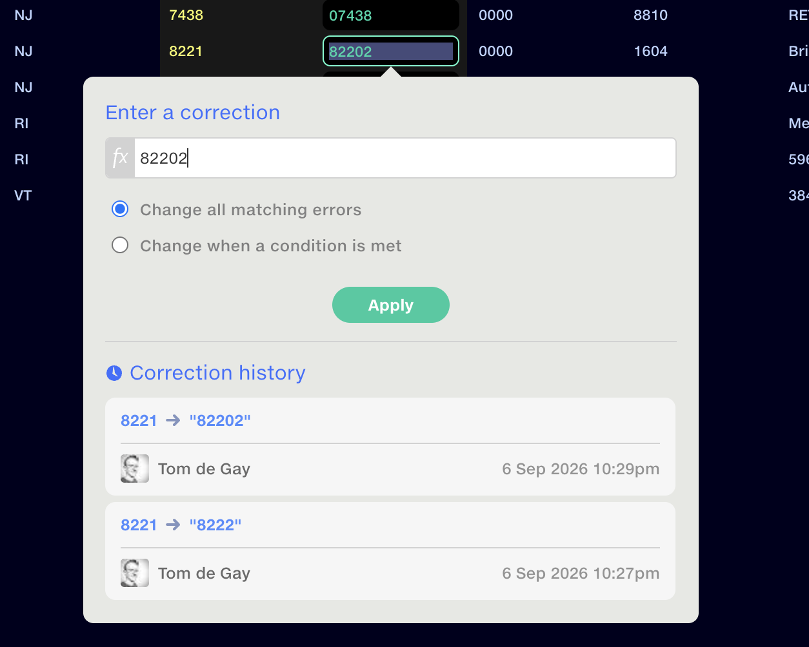
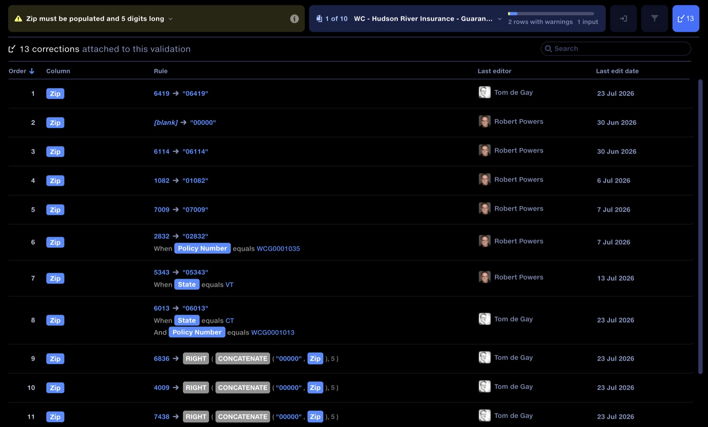
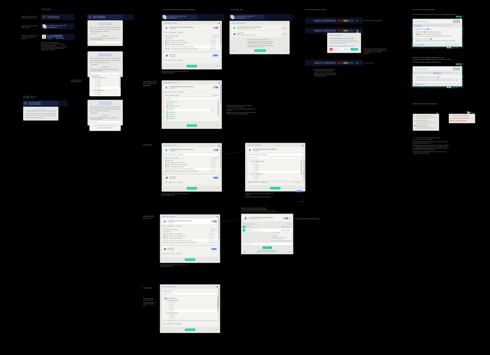

Closing the loop on data quality
Find and fix data issues before they reach downstream systems, all in one workflow.
WorkflowInformation designAuditability
- New corrections capabilities designed around observed patterns of use
- Built-in traceability and bulk corrections increase trust and help clients meet audit goals
- Integrated data type validation eliminates four pipeline steps per column, adding up to dozens of steps in a typical implementation
- In win-loss reviews, validation reports are a key reason clients choose Quantemplate

I led the design and evolution of Quantemplate’s validation tooling, from row-level reporting in 2017 to integrated corrections and automated data type checks in 2026.
The latest work makes validation results actionable. Users can correct invalid values directly in the report, creating targeted mappings with a complete audit trail. Integrated data type checks simplify configuration, while a sharing workflow will bring data suppliers into the process.

Validation corrections: find and fix data errors Using the Validation Report to identify data quality issues and create instant correction rules, each with a full history of who changed what and when. Watch on YouTubeWe’d made errors easy to spot but hard to fix
Quantemplate’s validation reports already identified problems at a row level. But the static reports were a dead end in the workflow. Resolving problems required users to configure additional pipeline steps or ask suppliers to correct and resubmit their files.
We needed to make the validations feature solve for the whole workflow. Enabling users to add corrections straight into the report was one step. Making the report’s user experience more efficient was another.
Unlocking validation results sharing would truly close the loop, enabling rapid round trip correction across organisations.
Information design
The design of the original report, done in 2017, was driven by information design principles, putting validation failures in the context of a whole dataset to give users a sense of scale.
I worked on this with an information designer who I was mentoring in UX. We did a lot of whiteboard prototyping so we could test ideas with subject matter experts and engineers before moving to high fidelity mockups to play back to our user cohort.

User feedback also helped us decide what to leave out. We explored allowing users to pivot the report to first view results by input file rather than by validation rule. Their response was helpfully direct:
Skip the dev on that. Just give me the validations. User feedback from Senior Analyst
We dropped the alternative view and focused development on the core reporting experience.
Ship, learn, repeat
Our philosophy was to get a working version into users’ hands sooner rather than later. We needed to see how the report held up to real data and business use.
We shipped a capable V1, then observed and progressively refined the experience.
For the 2026 upgrade to add corrections, we looked at how users were already making spot edits to their data by inserting calculation steps into their pipelines. These would typically map one value to another, sometimes making the mapping conditional on another value, such as the policy ID. This was a ‘desire line’ in the product.
The opportunity was to bring that existing pattern into the report, making corrections easier to configure and trace.

Make the scope of changes obvious
Quantemplate applies corrections to bulk data rather than isolated cells, so we needed to make this clear. When a user selects a field, it opens a popup where they enter the correction. The UI makes it clear that corrections can apply to every matching value or use conditions, such as correcting Premium only for a specific Policy Number.
We added a formula bar, so users could derive a value from another column. For example, if a date is missing, take the date from another column and subtract one month. Based on what we’d observed in production pipelines, this would be a necessary addition.

Preserve evidence
Audit was important to our clients, who use Quantemplate as a system-of-record for financial reporting. To support this we displayed the original failed values alongside the corrected rows in the report. The full change history of each edit was displayed.

Give immediate feedback
Corrections are applied to the output on the next pipeline run, so we called this out with a notification bar. But as a user types in a correction, we check that their entered value will pass the rule, and warn if it’s still a fail.
Ordering and audit
One of the things we discovered in testing, as part of our internal QA process, was that the order in which corrections apply is important, since one correction could overwrite a prior one. We created an interface showing all corrections applied to any validation rule, allowing users to reorder or remove them.

A shared correction workflow
The next step is to allow clients to send selected validation results back to the supplier through a Feed where they can make corrections.
This will take out several manual back-and-forth steps which are currently done over email.
The workflow covers preparing corrections, explicitly submitting them back, tracking progress and notifying both parties through in-app updates and email.

Sharing raised a raft of new questions, for instance: should the validation progress bar reflect the entire dataset or only the validations shared with the supplier? I chose the shared validations, ensuring requester and supplier saw the same measure of completion, and made this clear in the UI.
Validation Corrections are live in production. Correction sharing is currently under construction, targeting release in October 2026.
Automated type validation
We’d learnt from our client implementations that validating that data within a column met a generic type definition required too many steps. It wasn’t a problem that fitted neatly into the custom validation rule model that we’d established.
The solution arose when we implemented data semantics across the platform. Now, with an understanding of the data in each column we could implement a very lightweight solution. We added a toggle to enable type validations in Map Column Headers, the point in the pipeline in which schema is defined.
This cut out at least four pipeline steps for every column whose type was validated, removing implementation complexity and slashing hours from implementation time.
Closing the loop
In a demo of the new capabilities, clients cited the validation improvements as a significant boost to their workflow, with a clear focus on their productivity bottlenecks.
Being able to see who had made corrections was especially valuable to them for supporting their audit processes.
The next release will extend that workflow across organisations, addressing one of Quantemplate’s most requested capabilities, according to our user interviews: allowing suppliers to resolve reported issues directly, with both parties working from the same results.
 Image Insight
Making space for deeper reflection
Digital coaching tool that uses images and visual metaphors to prompt deeper reflection in online and face-to-face sessions.
Interaction designVisual designAccessibility
Image Insight
Making space for deeper reflection
Digital coaching tool that uses images and visual metaphors to prompt deeper reflection in online and face-to-face sessions.
Interaction designVisual designAccessibility